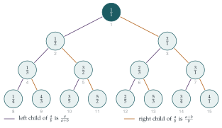

STEP III 2020, Question 8
Read the question before you go on. It is in the STEP III paper in OCR’s download of the 2020 STEP papers (a zip file): www.ocr.org.uk/Images/696589-2020-past-papers.zip
The hook
Can you list all the positive fractions, one after another, so that every fraction appears exactly once? It seems impossible: between any two fractions there are infinitely many more, so there is no “next” fraction to write down. Georg Cantor showed in the 1870s that it can nevertheless be done, which means that, in a precise sense, there are no more fractions than there are whole numbers.
Cantor’s list was clumsy: it included \(\frac{2}{4}\) as well as \(\frac12\), and the repeats had to be crossed out. This question builds a list with no repeats at all, from a sequence with an absurdly simple rule. It was published by Neil Calkin and Herbert Wilf in 2000, though the sequence itself was studied by Moritz Stern in 1858.
Before you start
Before proving anything, compute the first fifteen or so terms. What do you notice about the ratios \(u_n / u_{n+1}\)?
The sequence begins \[1,\ 1,\ 2,\ 1,\ 3,\ 2,\ 3,\ 1,\ 4,\ 3,\ 5,\ 2,\ 5,\ 3,\ 4,\ 1,\ 5,\ \ldots\] and the ratios \(u_n / u_{n+1}\) are \[\tfrac11,\ \tfrac12,\ \tfrac21,\ \tfrac13,\ \tfrac32,\ \tfrac23,\ \tfrac31,\ \tfrac14,\ \tfrac43,\ \tfrac35,\ \tfrac52,\ \tfrac25,\ \tfrac53,\ \tfrac34,\ \tfrac41,\ \ldots\] Every fraction appears in lowest terms, and none is repeated. The question asks you to prove that this goes on for ever, and that every positive fraction eventually turns up.
Working it through
Stage 1 Odd beats even
Consecutive terms are either \((u_{2k}, u_{2k+1})\) or \((u_{2k+1}, u_{2k+2})\).
Write each of these pairs in terms of \(u_k\) and \(u_{k+1}\). Which term is bigger?
\((u_{2k}, u_{2k+1}) = (u_k,\ u_k + u_{k+1})\) and \((u_{2k+1}, u_{2k+2}) = (u_k + u_{k+1},\ u_{k+1})\). Since every term is a positive integer (an easy induction), \(u_k + u_{k+1}\) is bigger than both \(u_k\) and \(u_{k+1}\). The only exception is the first pair, \((u_1, u_2) = (1, 1)\), which doesn’t fit either pattern because \(u_1\) is defined directly.■
Stage 2 Consecutive terms are coprime
Suppose \(d > 1\) divides both \(u_{2k}\) and \(u_{2k+1}\), that is, both \(u_k\) and \(u_k + u_{k+1}\). What else does \(d\) divide?
\(d\) divides \((u_k + u_{k+1}) - u_k = u_{k+1}\), so \(d\) divides the consecutive pair \(u_k, u_{k+1}\), which is earlier in the sequence. The other case is identical: if \(d\) divides \(u_k + u_{k+1}\) and \(u_{k+1}\), it divides \(u_k\).
So a common factor of a consecutive pair is passed back to an earlier pair, then an earlier one, and so on. Positions can’t decrease for ever (well-ordering yet again), so eventually \(d\) would have to divide the first pair, \(u_1 = u_2 = 1\). That is impossible for \(d > 1\). So every consecutive pair is coprime.■
Stage 3 No pair appears twice
Stage 1 tells you something useful: if you see a consecutive pair \((a, b)\), you can tell whether \(a\) sits at an odd or an even position. How? And can you then recover the pair that came before it, in the sense of Stage 2?
If \(a < b\), then (by Stage 1) \(b\) is at the odd position, so the pair is \((u_{2k}, u_{2k+1}) = (u_k, u_k + u_{k+1})\) for some \(k\), and the “parent” pair \((u_k, u_{k+1})\) is \((a,\ b - a)\). If \(a > b\), the pair is \((u_{2k+1}, u_{2k+2})\) and its parent is \((a - b,\ b)\). If \(a = b\), Stage 1 shows the pair must be the very first pair, \((1,1)\).
So each consecutive pair other than the first determines its parent pair, and the position of the parent (you can see this structure as a tree in Figure 1.8.1): the parent is at position \(k\) when the child is at \(2k\) or \(2k+1\). Now suppose \((a, b)\) appeared at two different positions. Their parents would be the same pair at two positions, and so would their parents, and so on. Following this back, we would eventually find \((1,1)\) at a position other than \(1\), which Stage 1 rules out.■
Stage 4 Every coprime pair appears
Suppose some coprime pair \((a, b)\) never appears consecutively. Which such pair should you look at?
Take the “missing” coprime pair with the smallest possible value of \(a + b\): a minimal counterexample. It can’t be \((1,1)\), which does appear, so \(a \neq b\) (coprime and equal forces \(a = b = 1\)).
If \(a > b\): the pair \((a - b, b)\) is coprime (any common factor of \(a-b\) and \(b\) divides \(a\)), and its sum \(a\) is smaller than \(a + b\). By minimality it does appear, say at positions \(k, k+1\). But then \(u_{2k+1} = u_k + u_{k+1} = a\) and \(u_{2k+2} = u_{k+1} = b\), so \((a, b)\) appears after all.
If \(a < b\): similarly \((a, b - a)\) appears at some \(k, k+1\), and then \((u_{2k}, u_{2k+1}) = (a, b)\).
Either way, contradiction. So every coprime pair of positive integers appears consecutively.■
(The question phrases part (iv) as a descent: a missing pair produces a smaller missing pair. That is the same argument, read the other way.)
Stage 5 A list of all fractions
Every positive rational number can be written uniquely in lowest terms as \(a/b\) with \(a, b\) coprime. By Stage 4, \((a, b)\) appears as some consecutive pair \((u_n, u_{n+1})\), so \(f(n) = a/b\): the range of \(f\) is all positive rationals. By Stage 3 it appears only once, and by Stage 2 every value \(f(n)\) is already in lowest terms, so two different \(n\) can’t give the same fraction. Hence \(f\) is a bijection from the positive integers to the positive rationals, and has an inverse.■
Looking back
Descent and its reverse. Common factors and repeated pairs were chased back to the start of the sequence. Missing pairs were handled by a minimal counterexample, building forward.
A bijection needs two halves. “Every fraction appears” (onto) and “no fraction appears twice” (one-to-one) are separate claims, proved separately.
Compute first. Writing out fifteen terms made the claims believable and suggested the parent–child structure that drove the proofs.
What’s really going on
Arrange the positive fractions in a tree: put \(\frac11\) at the top, and give each fraction \(\frac{a}{b}\) two children, \(\frac{a}{a+b}\) on the left and \(\frac{a+b}{b}\) on the right. Reading the tree row by row, left to right, gives exactly the list \(f(1), f(2), f(3), \ldots\) from this question (Figure 1.8.1). Stage 3 says every fraction has a unique parent, and Stage 4 says every fraction is in the tree. In 2003 Moshe Newman found that you don’t even need the tree: each fraction in the list can be computed from the one before by \[x_{n+1} = \frac{1}{2\lfloor x_n \rfloor - x_n + 1}.\]

Different sizes of infinity
A set that can be listed like this is called countable. The fractions are countable, which is surprising, since they seem so much more numerous than the whole numbers. In your first term at university you will also meet Cantor’s diagonal argument, which shows that the real numbers are not countable: any list of real numbers must miss some. So there really are different sizes of infinity, and the real numbers form a strictly bigger infinity than the rationals. This is one of the most startling results you will meet in a first-year course.
Stern’s sequence
The sequence \(u_n\) is Stern’s diatomic sequence, and it has many other lives. For example, \(u_{n+1}\) counts the number of ways to write \(n\) as a sum of powers of \(2\) with each power used at most twice. It is closely related to the Stern–Brocot tree and to continued fractions, which give the best rational approximations to irrational numbers.
The thinking skill
To show two sets are the same size, match them up exactly: prove that every element of the target is hit (onto), and that nothing is hit twice (one-to-one).
Bijections are the foundation of counting, finite and infinite, and you will use them constantly at university. Here both halves were proved by chasing a structure back to its starting point.
Try this next
Find the fraction. For which \(n\) is \(f(n) = \frac{3}{5}\)? And \(f(n) = \frac{5}{3}\)? Use the parent rule to work backwards to \(\frac11\).
Newman’s formula. Check that Newman’s formula produces the first ten fractions of the list, starting from \(x_1 = 1\).
Cantor’s diagonal argument. Suppose you had a list of all real numbers between \(0\) and \(1\), written as decimals. Construct a decimal that differs from the \(n\)th number in the list in its \(n\)th digit. Why does this show the list is incomplete? (What care is needed with decimals like \(0.0999\ldots = 0.1\)?)
Countable unions. harder Show that the set of all pairs \((m, n)\) of positive integers is countable by giving an explicit bijection with the positive integers. (Try \(2^{m-1}(2n-1)\).)
Further reading
Neil Calkin & Herbert Wilf, “Recounting the rationals” (American Mathematical Monthly, 2000). Four pages, entirely readable.
Aigner & Ziegler, Proofs from THE BOOK, Chapter 17, “Sets, functions, and the continuum hypothesis”, which includes the Calkin–Wilf tree.
Ian Stewart & David Tall, The Foundations of Mathematics (Oxford University Press). Countability, Cantor and the real numbers, as in a first-year course.